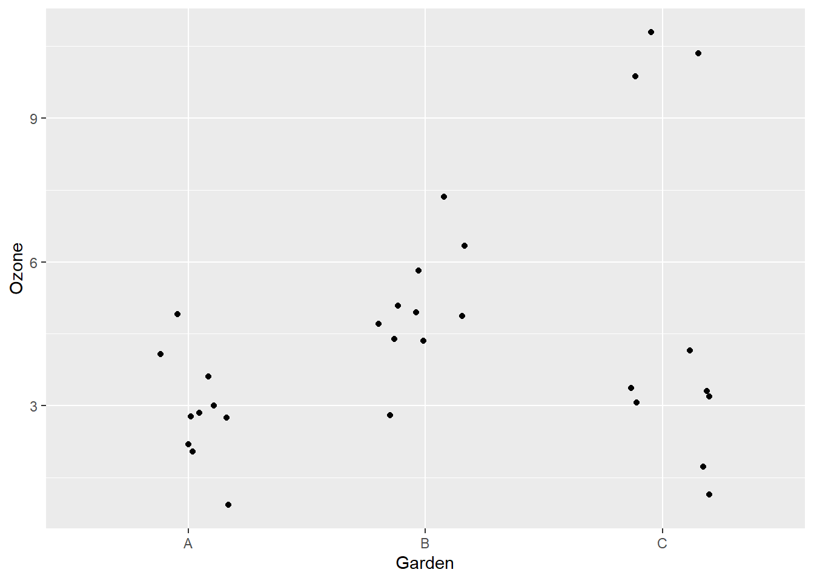

Estimation de paramètres et tests d’hypothèse
18 septembre 2019
Dans ce laboratoire, vous appliquerez les concepts vus lors des deux derniers cours.
1. Caractéristiques des fleurs de trois espèces d’iris
Pour cet exercice, nous utiliserons le célèbre jeu de données des iris d’Edgar Anderson, qui contient différentes mesures (en cm) prises sur 50 fleurs de 3 espèces d’iris. Ce tableau de données est déjà chargé dans R sous le nom iris.
data(iris)
head(iris)## Sepal.Length Sepal.Width Petal.Length Petal.Width Species
## 1 5.1 3.5 1.4 0.2 setosa
## 2 4.9 3.0 1.4 0.2 setosa
## 3 4.7 3.2 1.3 0.2 setosa
## 4 4.6 3.1 1.5 0.2 setosa
## 5 5.0 3.6 1.4 0.2 setosa
## 6 5.4 3.9 1.7 0.4 setosa- Nous allons d’abord visualiser une partie des données. À l’aide de ggplot2, produisez un nuage de points reliant la longueur et la largeur des sépales (
Sepal.LengthetSepal.Width), en différenciant les points de chaque espèce par couleur.
library(ggplot2)
ggplot(iris, aes(x = Sepal.Length, y = Sepal.Width, color = Species)) +
geom_point()
Comment procéderiez-vous pour calculer la moyenne de Sepal.Width pour l’espèce setosa et son intervalle de confiance à 95%?
- De quelles quantités avez-vous besoin pour ce calcul?
La moyenne, l’erreur-type (qui dépend de l’écart-type et du nombre de points) et les probabilités de la distribution \(t\) à \(p\) = 0.025 et \(p\) = 0.975.
- Déterminez la moyenne de
Sepal.Widthpour l’espèce setosa et son erreur-type.
setosa <- iris[iris$Species == "setosa", ]
moy <- mean(setosa$Sepal.Width)
n <- nrow(setosa)
err_type <- sd(setosa$Sepal.Width) / sqrt(n)
c(moy, err_type)## [1] 3.4280000 0.0536078Si vous n’êtes pas certains si la fonction de calcul de l’écart-type dans R (sd) utilise le dénominateur \(n\) ou \(n - 1\), comment pouvez-vous le vérifier? (Comment trouver de l’aide pour une fonction?)
Utiliser l’instruction ?sd dans R.
- Durant le cours sur les distributions statistiques, nous avons vu les fonctions
rnorm,dnorm,pnormetqnormqui permettent de calculer des valeurs à partir de la distribution normale. Des fonctions similaires existent pour la distribution \(t\) (rt,dt,pt,qt).
Quelle fonction nous permet d’obtenir la valeur de la variable \(t\) pour une probabilité cumulative \(p\) donnée?
Utilisons la fonction qt(p, df) pour déterminer l’intervalle correspondant à 95% de la probabilité. Quelles valeurs de \(p\) (la probabilité cumulative) utiliser? Quel nombre de degrés de liberté (\(df\)) en fonction de la taille de l’échantillon \(n\)?
\(p =\) 0.025 et 0.975, \(df = n - 1\).
- Calculez l’intervalle de confiance à 95% pour la moyenne calculée en (c). Comment interprétez-vous cet intervalle?
ic_min <- moy + qt(0.025, df = n - 1) * err_type
ic_max <- moy + qt(0.975, df = n - 1) * err_type
c(ic_min, ic_max)## [1] 3.320271 3.535729En répétant l’échantillonnage de 50 iris dans cette population de l’espèce setosa à plusieurs reprises, dans 95% des cas l’intervalle de confiance autour de la moyenne de l’échantillon contiendrait la valeur moyenne de la population.
2. Choix des méthodes d’échantillonnage
Vous souhaitez déterminer la moyenne et l’écart-type du taux de croissance des semis de bouleau jaune dans une région donnée. Votre unité d’échantillonnage est un quadrat de 1 m\(^2\) où la croissance annuelle des semis est mesurée. Quelle méthode d’échantilonnage préconiserez-vous pour le placement de ces quadrats selon les différents scénarios présentés, et pourquoi? Vous pouvez choisir un échantilonnage stratifié, par grappe, systématique, ou adaptatif.
- Les peuplements de cette espèce dans la région sont relativement semblables mais très éloignés l’un de l’autre.
Par grappe, pour réduire le temps de déplacement et échantillonner davantage dans un petit nombre de peuplements.
- La croissance pourrait être fortement influencée par le gradient de température nord-sud à l’échelle considérée.
Systématique, pour répartir les unités d’échantilonnage le long du gradient.
- L’espèce se retrouve dans plusieurs types de peuplement distincts couvrant des proportions différentes du territoire (ex.: 70% type A, 25% type B, 5% type C).
Stratifié, pour assurer que tous les types de peuplement soient adéquatement échantillonnés.
- C’est une espèce rare dans la région et sa distibution est peu connue.
Adaptatif, pour concentrer l’effort autour des points où l’espèce est déjà détectée.
3. Simulation d’échantillonnage stratifié
Pour cet exercice, nous comparerons l’échantillonnage simple et stratifié à partir d’échantillons simulés du tableau de données iris.
- Créez un graphique de boîtes à moustaches montrant la distribution des 50 longueurs de pétales (Petal.Length) pour chaque espèce.
ggplot(iris, aes(x = Species, y = Petal.Length)) +
geom_boxplot()
- Créez deux fonctions
iris_aleaetiris_strat. La première fonction choisit 30 observations au hasard d’iris, puis retourne la moyenne de Petal.Length pour ces observations. La deuxième choisit 10 observations au hasard de chacune des trois espèces, plus retourne la moyenne de Petal.Length pour les 30 observations.
Notes:
La fonction
sample(x, size)dans R simule l’échantillonnage d’un nombre de valeurs égal à size parmi celles du vecteur x.Vous pouvez écrire ces fonctions sans arguments (parenthèses vides après
function), comme dans l’exemple ci-dessous.
iris_alea <- function() {
# Insérer code de la fonction ici
}iris_alea <- function() {
samp <- sample(iris$Petal.Length, 30)
mean(samp)
}
iris_strat <- function() {
samp1 <- sample(iris$Petal.Length[iris$Species == "setosa"], 10)
samp2 <- sample(iris$Petal.Length[iris$Species == "versicolor"], 10)
samp3 <- sample(iris$Petal.Length[iris$Species == "virginica"], 10)
samp <- c(samp1, samp2, samp3)
mean(samp)
}
iris_alea()## [1] 3.69iris_strat()## [1] 3.736667- Générez un vecteur 1000 résultats de chaque fonction avec
replicate, comme suit:
rep_alea <- replicate(1000, iris_alea())
rep_strat <- replicate(1000, iris_strat())Notez qu’il est important d’inclure les parenthèses vides pour appeler la fonction.
Calculez l’erreur-type de chaque moyenne (à partir des écarts-type de rep_alea et rep_strat). Avant de faire le calcul, pouvez-vous deviner quelle méthode sera la plus précise? Pour quelle raison?
sd(rep_alea)## [1] 0.2891924sd(rep_strat)## [1] 0.06787014L’erreur-type de la moyenne stratifiée (écart-type de rep_strat) est environ 4 fois plus faible que celle de la moyenne aléatoire (écart-type de rep_alea), soit 0.07 contre 0.29. Cela est dû au fait que la longueur des pétales est plus variable entre les espèces qu’à l’intérieur d’une espèce.
4. Concentration d’ozone dans trois jardins
Pour cet exercice, nous utiliserons le tableau de données gardens.csv, qui provient du manuel Statistics: An Introduction Using R de Michael Crawley. Ces données représentent les concentrations d’ozone (en parties par 100 millions ou pphm) mesurées dans trois jardins (A, B et C) lors de différentes journées.
gardens <- read.csv("gardens.csv")- Observez la distribution des mesures d’ozone dans chaque jardin et indiquez la moyenne. Quel type de graphique pourriez-vous utiliser?
Voici une option avec des boîtes à moustaches:
library(ggplot2)
ggplot(gardens, aes(x = Garden, y = Ozone)) +
geom_boxplot()
Voici les points individuels avec geom_jitter. il s’agit d’un geom_point qui espace les points aléatoirement sur l’axe des x pour différencier les points avec le même y:
ggplot(gardens, aes(x = Garden, y = Ozone)) +
geom_jitter(width = 0.2)
L’argument width de geom_jitter détermine comment les points sont dispersés sur l’axe des x. Il devrait être assez grand pour voir tous les points, mais pas trop pour conserver la séparation entre les groupes.
- Calculez la moyenne et l’écart-type de la concentration d’ozone dans chaque jardin. Que remarquez-vous? Est-ce que la moyenne est une bonne indicatrice de la valeur “typique” dans chaque jardin?
Note: La fonction tapply(X, INDEX, FUN) applique la fonction FUN à X pour chaque valeur du facteur INDEX. Donc la moyenne de la concentration d’ozone par jardin peut être calculée avec tapply(gardens$Ozone, gardens$Garden, mean).
tapply(gardens$Ozone, gardens$Garden, mean)## A B C
## 3 5 5tapply(gardens$Ozone, gardens$Garden, sd)## A B C
## 1.154701 1.154701 3.771236Le jardin C a un écart-type beaucoup plus élevé. Mais surtout, la moyenne de 5 n’est pas une valeur typique, puisqu’on a 7 points entre 1 et 4, et 3 entre 10 et 11.
- À partir de ces données, testez l’hypothèse nulle selon laquelle les jardins A et B reçoivent la même concentration d’ozone en moyenne. Quel est votre estimé de la différence entre les moyennes et son intervalle de confiance à 99%? Est-ce que ce test donne une bonne idée de la différence entre les deux jardins? Expliquez votre réponse.
gardensAB <- gardens[gardens$Garden != "C", ]
t.test(Ozone ~ Garden, data = gardensAB, conf.level = 0.99)##
## Welch Two Sample t-test
##
## data: Ozone by Garden
## t = -3.873, df = 18, p-value = 0.001115
## alternative hypothesis: true difference in means is not equal to 0
## 99 percent confidence interval:
## -3.4864203 -0.5135797
## sample estimates:
## mean in group A mean in group B
## 3 5L’estimé \(\mu_A - \mu_B\) est de -2 avec un intervalle de confiance (-3.5, -0.5). L’hypothèse nulle est rejetée.
Comme on a vu plus haut, les deux jardins ont une distribution semblable de concentration d’ozone, sauf que la moyenne du jardin B est plus élevé. Donc ici, le test \(t\) comparant les moyennes décrit bien la différence entre les deux.
- Répétez l’exercice précédent pour l’hypothèse nulle selon laquelle les jardins A et C reçoivent la même concentration d’ozone en moyenne. Commentez sur la différence entre ce résultat et le résultat précédent.
gardensAC <- gardens[gardens$Garden != "B", ]
t.test(Ozone ~ Garden, data = gardensAC, conf.level = 0.99)##
## Welch Two Sample t-test
##
## data: Ozone by Garden
## t = -1.6036, df = 10.673, p-value = 0.138
## alternative hypothesis: true difference in means is not equal to 0
## 99 percent confidence interval:
## -5.897603 1.897603
## sample estimates:
## mean in group A mean in group C
## 3 5L’estimé \(\mu_A - \mu_C\) est de -2 avec un intervalle de confiance (-5.9, 1.9). L’hypothèse nulle n’est pas rejetée.
La différence entre les moyennes de A et C est la même que la différence entre les moyennes de A et B, mais le jardin C a une plus grande variance, ce qui explique pourquoi la différence n’est pas significative. Toutefois, comme nous avons vu plus tôt, la moyenne ne décrit pas bien les données du jardin C et la distribution est très loin d’être normale. Dans ce cas-ci, le test \(t\) n’est probablement pas une bonne façon de décrire la différence entre les groupes.